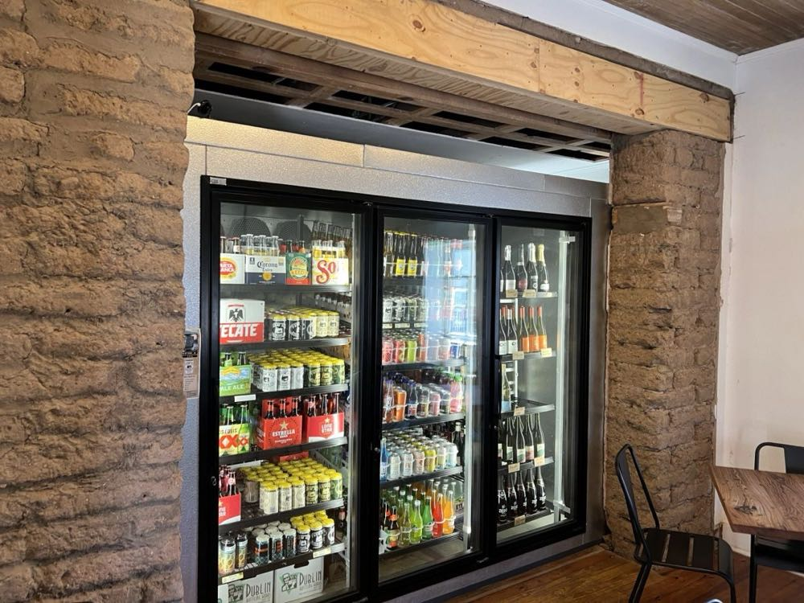
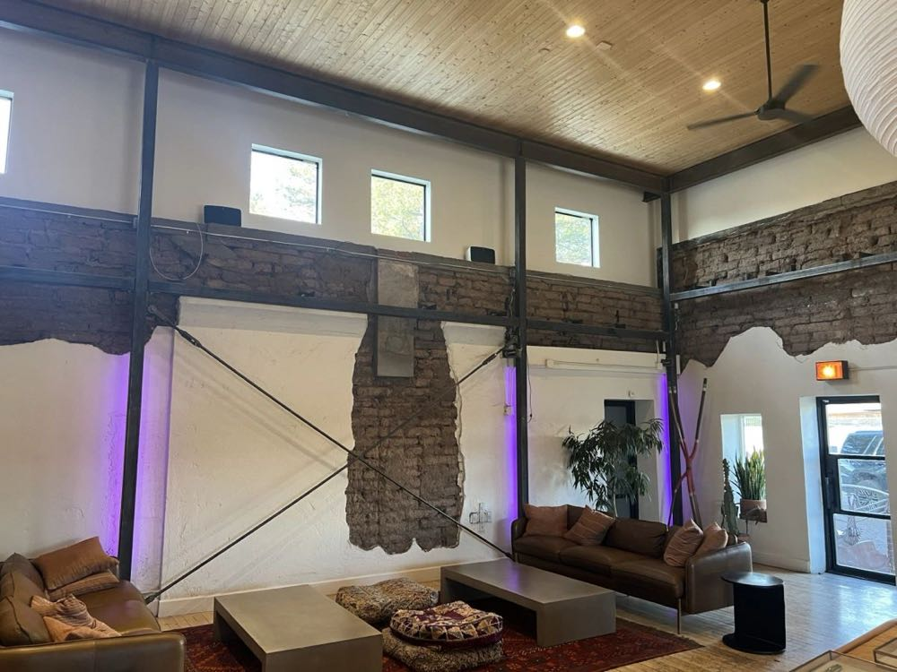
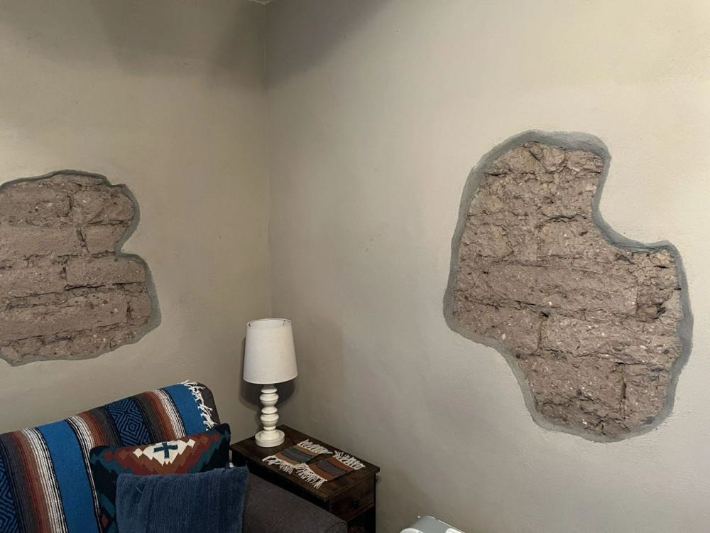
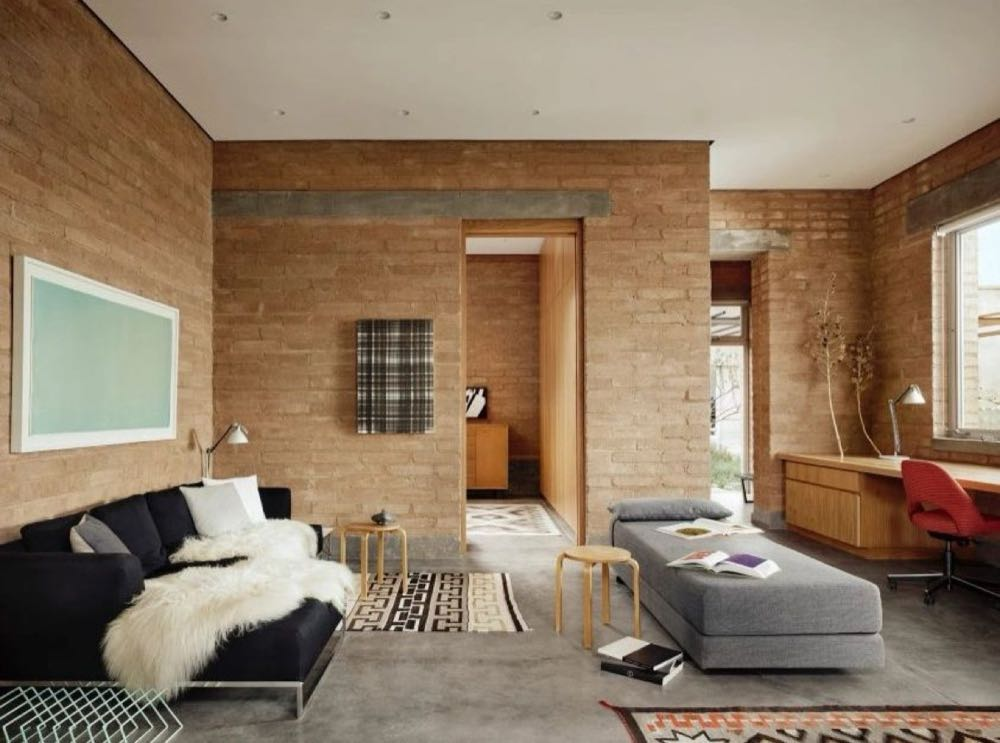
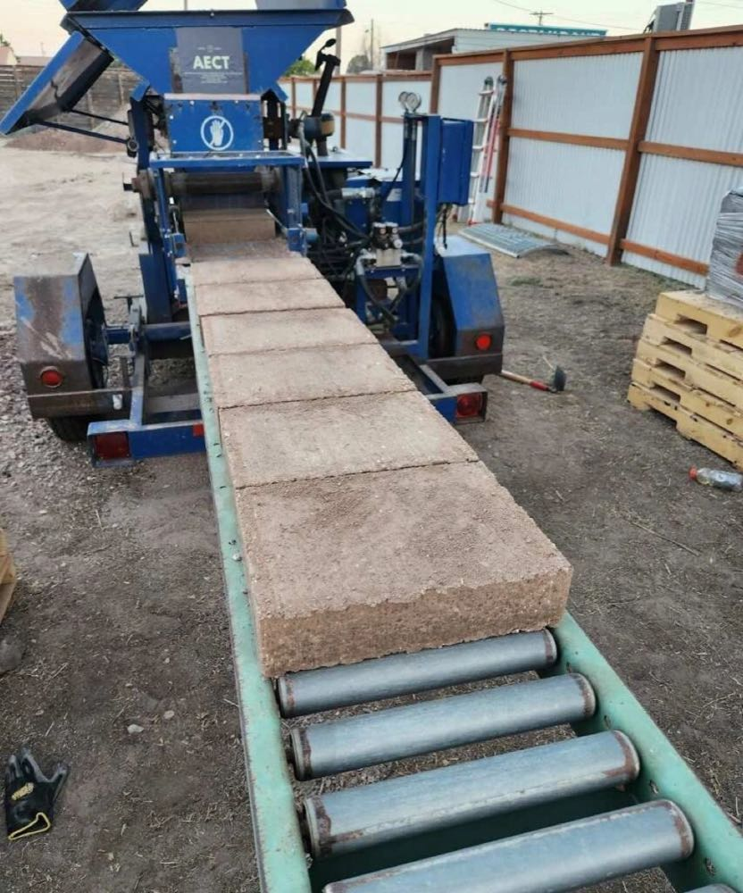
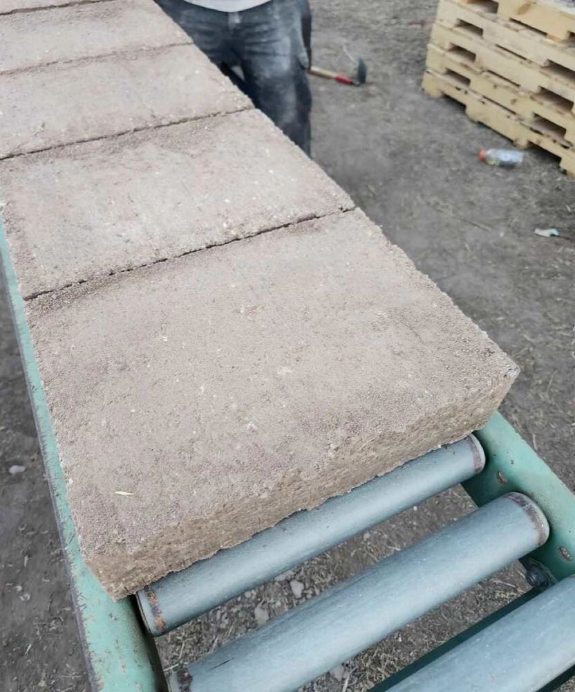

Last week, I had the pleasure of helping a customer get his AECT 3500 machine up and going in Marfa, Texas. It's a little bit off the beaten path, but if you're into earthen construction, Marfa is well worth a visit. The town is filled with 100+ year old adobe structures that investors have begun to rehabilitate. Just going to get a coffee or pick up some refreshments at a convenience store affords the opportunity to feast your eyes on some unique abode walls.



In addition to the old adobe renovations, locals are starting to build new homes with compressed earth blocks in Marfa. I had a chance to visit this beautiful CEB home that was built just two years ago. You can read more about it, here: DUST designs Marfa ADU for isolated desert living in Texas (dezeen.com) By chance, I found out that this home was actually built using AECT equipment. It was built by a customer of ours named Adam Wayne of www.beyondadobe.com


The existing earthen architecture provided a great backdrop for setting up a client's CEB machine right in Marfa. We were able to find some great local dirt and make some beautiful CEBs right away, using a recently refurbished AECT 3500. We produced some 8% cement-stabilized, 8% lime-stabilized, and 4% lime/4% cement-stabilized blocks and can now let them cure before testing them and deciding which recipe works best. Early indications are that the client will have some amazing blocks to work with.


We can't wait to visit Marfa again in the near future and witness the great things that are happening with earthen construction and, specifically, AECT machinery!